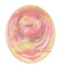

Trichomonal Vaginitis
Rx :
Tab Metronidazole 500mg N=28 BD for 7 days🔹
Tab Tinidazole 500mg N=28 BD for 7 days🔸
Tab Metronidazole Or Tinidazole 500mg N=8🔹
2gr single dose (4tab)
هر کدام از موارد فوق را میتوانید تجویز کنید
نکته : دارو های موضعی در درمان این نوع واژینیت هیچ جایگاهی ندارد
نکته : درمان همزمان شریک جنسی الزامی است
نکته : به بیمار اکیدا توصیه کنید که تا زمان تکمیل دوره درمان و بی علامت شدن و تا یک هفته بعد از اتمام درمان از رابطه جنسی خودداری کند
نکته : مصرف مترونیدازول در بارداری اشکالی ندارد ولی در خانم های شیرده، حین درمان با مترونیدازول تا ۲۴ ساعت بعد از آخرین دوز از شیردهی کودک خودداری شود.
یک نوع بیماری STI می باشد و درمان هر دو شریک جنسی الزامی است
معاینه
▫️تورم و اریتم ولو
▫️پتشی و پچ توت فرنگی سرویکس
▫️ترشحات کف آلود ، زرد سبز تا خاکستری
علائم بالینی
▪️ترشحات زیاد بدبو (شکایت اصلی)
▪️خارش
▪️سوزش
▪️دیزوری
▪️دیسپارونی
▪️خونریزی بعد از نزدیکی
1️⃣ واژینیت کاندیدایی
2️⃣ واژینیت باکتریال
3️⃣ واژینیت آتروفیک
4️⃣ سرویسیت
5️⃣ گونوره
6️⃣ هرپس سیمپلکس
7️⃣ عفونت کلامیدیایی
Mechanical or chemical irritation 8️⃣
9️⃣ جسم خارجی
🔟 ترشحات طبیعی
1️⃣1️⃣ PID
1️⃣2️⃣ UTI
1️⃣3️⃣ سیفلیس